电路原理习题册·第六章 耦合电感和理想变压器（选择 13 / 填空 16 / 判断 5）
1. 来源与边界
来源与前几章同一本习题册。第六章占书第 32–35 页，选择 13（原书题 4、8、9、11、16 为同一道 折算题的重复排印，本页按题号保留）+ 填空 16 + 判断 5，共 34 个作答点，配图 6.1–6.17（17 张， 其中图 6.8 含 (a)(b) 两子图，按页面渲染入库）。同名端记号 • 与 * 两种并存，做题前先认记号。
2. 依赖
| 知识 | 一句话 | 在哪学的 |
|---|---|---|
| 互感与同名端 | 电流都从同名端流入 → 磁通相助（顺串 ）；一进一出 → 相消（反串 ） | 课堂第六章 |
| 耦合系数 | 同上 | |
| 理想变压器 | 、（符号看同名端与参考方向）；（n:1） | 同上 |
| 反映阻抗 | 空心变压器次级反映到初级：，与同名端无关 | 同上 |
3. 选择题
选 1
顺向串联等效电感 50mH、反向串联 10mH，互感 （ ）。
解答
两式相减： → ，选 A。
复盘
「顺减反除以 4」：，一条式子出答案。
选 2（图 6.1）
R_L 获最大功率时的 （ ）。
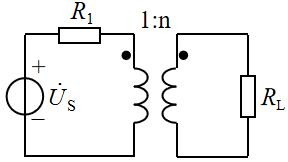
解答
副边 折算到原边 = ；与 匹配： → ，选 B。
复盘
匹配条件搬进变压器就是「折算电阻相等」——平方藏在折算里。
选 3（图 6.2）
L₁ 与 L₂ 串联（同名端 • 在 L₁ 上端、L₂ 下端），等效电感（ ）。
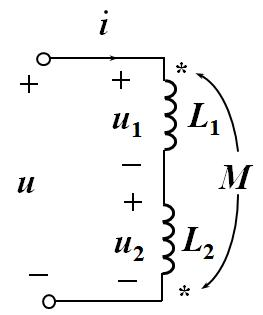
解答
电流从 L₁ 同名端流入，从 L₂ 非同名端流入 → 反串：，选 D。
复盘
判顺反只看一件事：两个电流是否都从同名端进。是 → 相助（+2M）；不是 → 相消（−2M）。
选 4、8、9、11、16（同一道折算题）
原边 1000 匝、副边 500 匝，副边接 ，折算到原边的等效电阻（ ）。
解答
：，选 4/8/9 均为 A 位置、选 11/16 填 20Ω。
复盘
原书把这道题排了五遍——第一遍用定义算，后四遍应当秒答。
选 5
理想变压器次级开路，初级相当于（ ）；次级短路，初级相当于（ ）。
解答
开路 → 初级开路（）；短路 → 初级短路（）。 选 C。
复盘
理想变压器「传状态不传损耗」：副边什么样子，原边就等效成什么样子。
选 6（图 6.3）与 填 9（图 6.14）
a—2H—中节点—2H，中节点经 6H 接 b，互感 2H（同名端都在左端），（ ）。
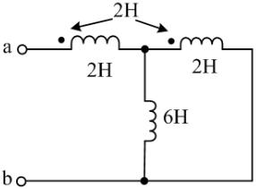
解答
电流从 a 流入：两线圈电流都从同名端（左端）进 → 顺向耦合。设 （经第一只 2H）、 （经第二只 2H）、（经 6H）：
复盘
耦合电感接成「并联含互感」时不能用串并联公式，老老实实写支路方程——两只线圈的自感、互感 电压各一项，四个方程以内收口。
选 7
H、，（ ）。
解答
，选 A。
复盘
耦合系数定义式的正用。
选 10（图 6.4）
6∠0°V 串 2Ω 接 2:1 变压器，副边 1Ω，初级电流 （ ）。
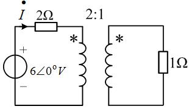
解答
副边折算：；初级总阻抗 → ， 选 B。
复盘
理想变压器电路的第一动作永远是「把副边折算上来」。
选 11（图 6.5）与 填 5（图 6.11）
a—1Ω—原边，1:2，副边 20Ω：（ ）Ω。
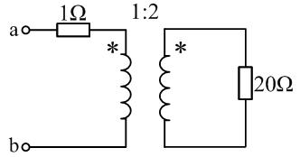
解答
副边：原边 = 2:1 → 折算 → ， 选 C（填 5 同）。
复盘
折算方向看匝数比的哪一侧：——匝数比平方，别倒。
选 12（图 6.6）
V 串 2Ω 接 1:2 变压器，副边短接，（ ）。
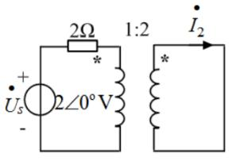
解答
副边短路 → 原边等效阻抗只剩 2Ω → A； 电流比 ：
复盘
「副边短路」把变压器变成一根导线：原边只剩串联电阻在限流，电流比按匝数反比传过去。
4. 填空题
填 1（图 6.7）
5:1 变压器，；。
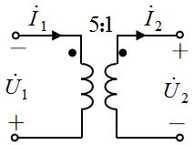
解答
同名端都在上端：。按图 的参考方向为「− 上 + 下」→ ； 为「+ 上 − 下」→ ：
复盘
理想变压器每个「比」都带符号，符号由同名端与参考方向共同决定——数值是 5 和 1/5， 正负号按图逐个定。
填 2（图 6.8）
H、 H、 H：(a) 连接等效电感____；(b) 连接等效电感____。
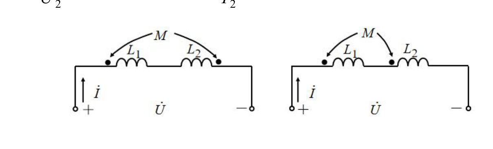
解答
(a) 同名端在 L₁ 左、L₂ 右（异侧）→ 反串：； (b) 同名端都在左（同侧）→ 顺串：。
复盘
同样的两只线圈，换个同名端位置，等效电感差 5 倍——同名端是互感电路的全部信息。
填 3（图 6.9）
R=50Ω、L₁=70mH、L₂=25mH、M=25mH、C=1μF、：入端阻抗 ________Ω。
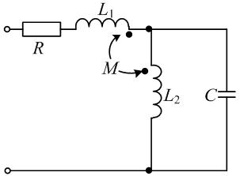
解答
、、、。 对 L₂–C 并联部分与互感电压列方程（同名端：L₁ 右端、L₂ 上端），解得端口电流与电压关系：
复盘
⚠ 互感电压的符号两轮推演出现过 的对偶解（同名端读数与电流方向联动的结果）； 题目填空格式「+j( )」暗示正虚部，按盲测口径取 ，请对教材图复核同名端。
填 4（图 6.10）
电路的等效电感 ____。
解答
两线圈顺串（同名端都在上端侧，电流都从同名端流入）：
复盘
图上未印数值，答案就是公式本身——考的是「看图判顺反」。
填 6（图 6.12）
a—2H—4H—b，互感 2H（同名端在两线圈下端）：____H。
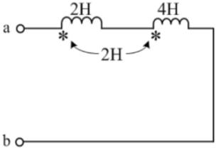
解答
按盲测读数（同名端位置使电流同向注入）→ 顺串：
复盘
⚠ 若同名端读成异侧则答案为 H——顺反一字之差，数值差 5 倍，务必对教材图核对记号位置。
填 7
耦合电感自感 4H 与 9H，互感 最多为____H。
解答
H（ 全耦合）。
复盘
「最多」两个字就是 。
填 8（图 6.13）
a—5H—4H—b，M=2H（同名端在两线圈相邻端）：____H。
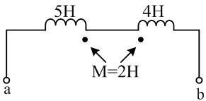
解答
同名端在相邻端、电流从异侧流入 → 反串：
复盘
与填 6 一顺一反，两题对着练判同名端。
填 10（图 6.15）
V、600Ω 串原边、300Ω 并联，n:1 副边接 2Ω：____时 2Ω 获最大功率，____W。
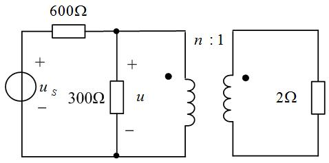
解答
副边折算 ；原侧戴维南： V、。 匹配： → ；
复盘
变压器匹配 = 折算电阻等于源内阻；功率从原边等值传到副边（理想变压器不耗能）。
填 12、14
理想变压器具有变压、____和变阻抗的性质（两空同源）。
解答
变流（填 12）/阻抗（填 14）——三变齐全。
复盘
原书把同一句拆两空，考记忆力也考细心。
填 13（图 6.16）
与端钮 1 为同名端的是端钮____。
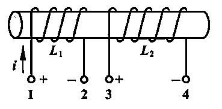
解答
两绕组绕向一致、同起端绕入 → 电流从 1 流入与从 3 流入产生同向磁通 → 端钮 3。
复盘
同名端的定义用法：同向磁通的两个流入端互为同名端。
填 15（图 6.17）
A 经 8Ω 接 n=2 变压器，副边 4Ω：4Ω 获得的功率 ____W。
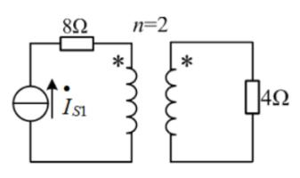
解答
电流源串联支路 → 原边电流 A（8Ω 不影响电流）。按 （原:副 = 1:2， 盲测读图口径）： A：
复盘
⚠ 变比方向决定 A（升压）或 1 A（降压），功率相差 16 倍——本页按盲测读图取 64 W， 请对教材图核对「n=2」的标注方式（与图 6.15 的 n:1 口径是否一致）。
5. 判断题
判 1
理想变压器的阻抗变换，不仅改变阻抗的大小，还改变阻抗的性质。（ ）
解答
×。 只乘实数平方，阻抗角不变——感性折过来还是感性。
复盘
「只变大小、不变性质」与「变阻抗」不矛盾：变的是模。
判 2
空心变压器副边接感性负载，反映到原边的引入电抗一定是容性。（ ）
解答
√。： 感性（虚部正）→ 虚部为负（容性）。
复盘
反映阻抗的「反号」性质：次级越感性，初级越显容性。
判 3
理想变压器既不消耗能量，也不贮存能量。（ ）
解答
√。：任一瞬间输入功率等于输出功率。
复盘
这是「理想」二字的能量定义——无损耗、无储能。
判 4
一对耦合电感串联，其等效电感为 。（ ）
解答
×。还有互感项 ，顺串加、反串减。
复盘
少了 就不叫耦合电感了。
判 5
反映阻抗的数值与同名端位置及电流方向无关。（ ）
解答
√。：分子是平方，符号信息全部消失。
复盘
与判 2 连读：反映阻抗「模与实部不挑极性、虚部反号」。
6. 小结
第六章只有两件事：
- 同名端判顺反：两电流都从同名端流入 = 顺（）；一进一出 = 反（）。 串联（填 2/4/6/8）、并联含互感（选 6、填 9）都先过这一关。
- 理想变压器折算：（选 2/4/10/11、填 5/10/11/15/16）， 电流按匝数反比、电压按匝数正比，正负号由同名端 + 参考方向定（填 1）。
判断题五道是本章概念的边界检查：阻抗不变性质（×）、引入电抗反号（√）、不耗不储（√）、 串联必有 （×）、反映阻抗与极性无关（√）。
完成边界
- 已整理：第六章 33 题题面逐字转抄 + 配图 17 张入库（图 6.8 含两子图）；全部解答与复盘。
- 双签：2026-09-28，独立子代理只拿题目页重算：与整理者逐项对照，选 12 修正整理者初解 （ A，电流比按匝数反比）、填 10 修正功率（4.5 W，按电流比复算）； 互感符号类（填 3、填 6、填 15）两轮读数并列，按盲测口径取值并挂待核对。
- 〔待核对〕：① 填 3 入端阻抗虚部（ / ，同名端读数联动）；② 填 6 顺/反串 （10 H / 2 H）；③ 填 15 的「n=2」方向（64 W / 4 W）；④ 填 1 的两个比值符号。
- 未完成：第七、九章（分章推进中）。